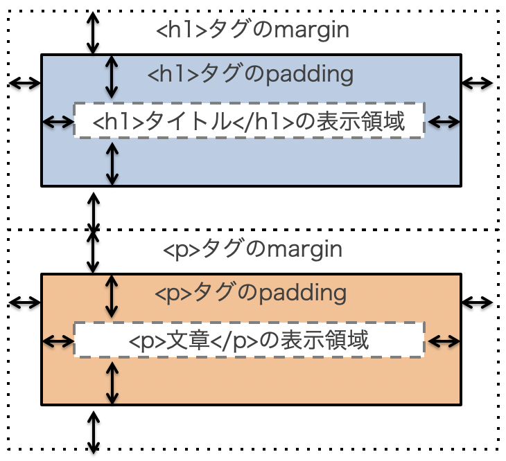

CSSの基本
本章では，CSSファイル作成の基本について学びます．
初学者用Webページ開発環境（pikeplace - kenya）を使って学習を進めます．
基本的な使い方はsumatraに準じています．
CSS
CSS（Cascading Style Sheet）はHTMLとの組み合わせでWebページを実現する仕組みです．
主にWebページの「見た目（スタイル）」を規定します。
CSSを作成する場所
CSSを作成する（記述する）場所には以下の３種類があります。
- HTML文書中にstyleタグを使って記述
- HTMLの要素にstyle属性を使って記述
- 外部ファイル（htmlとは別のファイル）として作成し，HTML文書から読み込む
CSS作成時の注意
CSSファイル作成時には以下に注意してください．
- ファイルの拡張子を「.css」にする
- ファイルの文字コード（エンコーディング）を「UTF-8」にする
- kenyaで作成する場合は自動的にUTF-8になります．
最初のページ（最小限の構成）
まずはkenyaにログインし，新しいフォルダを「Sample02」という名称で作成してください．
その後，新しいファイルを「index.html」という名称で作成してください．
index.htmlを作成したら，次の「source」のように編集してください．
さらに、「fitst.css」という名称で新規にファイルを作成してください。 first.cssは次の「source」のように編集してください．
h1{
color: blue;
}
さらに、index.htmlの7行目（ <title>CSSの練習</title>の下）に以下を追加してください．
<link rel="stylesheet" href="first.css">
最終的には以下のようなコードになります． 「練習1」の色が変化したことを確認してください。
CSSの構造
CSSの基本的な構造は以下のようになっています．
h1{
color: blue;
}
|
セレクタ{
プロパティ: 値;
}
|
セレクタ（見た目を変えたい場所：HTMLタグなどで指定）に対して，プロパティと値のセットを指定します．
今回の場合は，color（プロパティ）とblue（値）の組み合わせになっています．
つまり、上記のCSSは「h1タグ<h1>の文字色を青色に設定する」という意味になります．
プロパティの後はコロン（:），行の最後はセミコロン（;）です．
プロパティに対して値が複数ある場合には，値の間をスペースで区切ります． 複数のプロパティに設定する場合は行を変えます．
セレクタとして指定できる要素は以下です．
- タグ
- body, p, table, th, ul, などなど
- ID
- クラス
- セレクタ指定時にはclass名の前に「.」 をつける
/* と */で囲まれた部分はHTMLと同様にコメントになり，解釈・表示されません．
範囲指定（汎用要素）
汎用要素とは，HTML文書のなかの「ある特定の範囲」を指定するための要素です．
- div : 汎用ブロック要素
- span : 汎用インライン要素
汎用要素には，区別するための識別子をつけます．
識別子を利用して，「どの」要素にスタイルを適用するかを特定します．
- id : 文書中の特定の1箇所を指定する
- class : 文書中の複数の箇所をまとめて指定する
なお、idやclassは通常のタグにもつけられます． 使用例を以下に示します．
<!DOCTYPE html>
<html lang="ja">
<head>
<meta charset="UTF-8">
<title>CSSの練習</title>
<link rel="stylesheet" href="divspan.css">
</head>
<body>
<p>汎用要素の指定例</p>
<p>文章中の<span class="foo">この場所</span>は別のスタイル</p>
<p>文章中の<span id="bar">この場所</span>は上とは別のスタイル</p>
<p>次はdivの例です．<div id="baz">divはまとまりとしてスタイルを指定する時に使います．ただし<span class="foo">ここ</span>だけ一番上と同じスタイルとなります．divの前後は改行されます．</div>ここからdivの範囲外になります．</p>
</body>
</html>
id（bar, baz）でしている場所はそれぞれ１カ所ずつあります．
これらはそれぞれ別のスタイルが適用されます．
またclass（foo）で指定している場所は２カ所あります．
これらは同じスタイルが適用されます．
cssファイル内でのID、クラスの指定は以下のように行います．
- ID
- 識別子idで指定した名前の先頭に「#」をつける
- 例：#bar, #baz
- クラス
- 識別子classで指定した名前の先頭に「.」をつける
- 例：.foo
- divspan.css
#bar{
color: blue;
}
#baz{
color: red;
}
.foo{
color: green;
}
実際の見た目は以下のようになります．
例題1 CSSを適用する
kenyaにログインし、Sample02フォルダを作成してください．
classroomからtest.jpgをダウンロードし、Sample02フォルダにアップロードしてください．
また，以下のようにtest01.htmlファイルを作成してください．
6行目で外部CSSファイルとして，「mystyle.css」を指定していることに注意してください．
これを元にスタイルを適用していきます．
mystyle.cssファイルの作成
mystyle.cssファイルを作成し，以下の内容（左側）を作成してください．
/* mystyle.css */
h1{
color: blue;
font-size: 40px;
}
|
mystyle.cssの説明
h1タグに対して{
色を青色に
フォントサイズを40pxに
}
|
例題2 様々なスタイルを適用する
以下では様々なスタイルについて説明しますが、全を解説するわけではありません．
詳細を知りたい人は，先週紹介したHTMLクイックリファレンス（http://www.htmq.com/ ）などを参照のこと．
テキストのスタイル：タグへの適用
まず最初にh2タグにスタイルを適用します（見た目を変更します）．
mystyle.cssに以下を追記してください．
/* mystyle.cssに追記 */
h2{
color: green;
font-size: 25px;
font-weight: bold;
font-style: italic;
text-align: center;
text-decoration: underline;
}
|
mystyle.cssの説明
h2タグに関して{
色を緑に
フォントサイズを25pxに
フォントを太字に
フォントをイタリックに
テキストの場所をセンタリング
テキストはアンダーラインで装飾
}
|
テキストのスタイル：ID，クラスへの適用
最初にtest01.htmlファイルにIDとクラスを設定します．
<body>
<p class="attention">最小限の構成</p>
<h1>ようこそ</h1>
<p id="underline20">この部分に文章を書いていきます。</p>
<h2>改行の方法</h2>
<p>この文の直後で改行する。<br><span class="attention">改行</span>しました。</p>
<h2>画像を貼る</h2>
|
このpタグ要素に「attention」クラスを設定
このpタグ要素に「underline20」IDを設定
このspanで囲まれた部分に対して「attention」クラスを設定
文章の一部のみを指定したいためspanを利用している
|
次に，mystyle.cssファイルに追記します．
#underline20{
font-size: 20px;
text-decoration: underline;
}
.attention{
color: red;
font-size: 24px;
}
|
underline20というIDに対して
フォントサイズを20px
テキストにアンダーライン
attentionというクラスに対して
文字色を赤
フォントサイズを24px
|
ブロック要素のスタイル
段落など文章のまとまりを指定したい場合にはdivタグを用いて指定します．
test01.htmlに以下のように追記してください．
<body>
<p class="attention">最小限の構成</p>
<h1>ようこそ</h1>
<p id="underline20">この部分に文章を書いていきます。</p>
<div id="block">
この部分はblockというIDが付けられている。
</div>
|
文章を追記し，その文章の範囲に「block」IDを設定
|
さらにmystyle.cssに以下を追記します．
#block{
background-color: aqua;
width: 30%;
height: 50px;
border-color: grey;
border-width: 5px;
border-style: solid;
/* solid の他に double; dotted;
dashed; inset; outset; が指定できる*/
}
|
block01というIDに対して
背景色を水色に
横幅は，表示領域の30％
高さは，50px
範囲の枠の色を灰色に
枠の幅は5px
枠線は通常の線
|
余白：マージンとパディング

要素ごとに余白（マージン、パディング）を設定できます．
test01.htmlに以下のように追記してください．
<div id="block">
この部分はblockというIDが付けられている。
</div>
<div id="b01">
この部分はb01
</div>
<div id="b02">
この部分はb02
</div>
|
文章を追記し，その文章の範囲に「b01」IDを設定
文章を追記し，その文章の範囲に「b02」IDを設定
|
さらにmystyle.cssに以下を追記します．
#b01{
background-color: #b0b9a9;
margin: 50px;
padding: 5px 0px 25px 20px;
}
#b02{
background-color: #89709f;
margin: 0px;
padding: 0px;
}
|
b01というIDに対して
背景色を16進数で指定
marginは上下左右50px
paddingは，上5px, 右0px,
下25px, 左20px
b02というIDに対して
背景色を16進数で指定
marginは上下左右0px
paddingは上下左右0px
注： 文字周り横の余白ではない
注： 一個値を設定：上下左右が均等
注： 二個値を設定：上下，左右 の設定
注： 四個値を設定：上,右,下,左の順の指定
|
リストのスタイル
リストに特有のスタイルには以下があります．
- ul
- { list-style-type: square; } ← 四角に
- ol
- { list-style-type: hiragana; } ← ひらがな
- lower-alpha 小文字アルファベット
- lower-roman 小文字のローマ数字
などです（調べてみましょう）．
各自、どのような見た目になるかを確かめてみてください．
擬似クラス
指定の要素が特定の状態である場合にスタイルを適用させるセレクタを擬似クラスと呼びます．
もう少しわかりやすくいうと、ユーザの何かの動作をきっかけにクラスが割り当てられる仕組みといえます．
要素の後ろに「:」をつけ，状態を記述します．
例えば以下のような使い方をします．
/* HTMLファイルの例 */
<body>
<h1>あいさつ</h1>
<ul id="greet">
<li>おはよう！</li>
<li>こんにちは！/li>
<li>こんばんは！</li>
</ul>
<span class="person">青山さん！</span>
</body>
|
/* cssファイルの例 */
li:last-child {
color: green;
}
/*
リストの最後の要素に色をつける
*/
.person:hover {
color: red;
}
/*
personクラスにマウスオーバーしたら色を赤に
*/
|
セレクタの高度な指定方法
複数のセレクタの指定の仕方にはいくつかの方法が存在します． 例を載せておくので，一度試してみてください．
- カンマで区切る #id, .class
- スペースで区切る #id .class
- 後のセレクタが前のセレクタの下位の要素である場合にはスタイルを適用（子要素，孫要素）
- 大なりで区切る #id>.class
- 後のセレクタが前のセレクタの子要素である場合には，スタイルを適用（孫要素の場合には適用されない）
- 区切らず，つなげた場合 span.foo
- span要素のうち，classがfooのモノのみ適用
またセレクタの優先順位は次のようになります．
（上の方が優先度が高い）
- importantがついているものが優先
- 詳細に指定した方が優先
- idの方がclassより優先
- 後から書いた方が優先
文字の回り込みとレイアウト
文字の回り込みは以下のように記述します．
- HTML
- CSS
- その要素をfloat命令でどこに置くのかを指定（例：left, right）
また，文字の回り込みの設定は【明示的に設定を解除するまでそのままです】．
解除は以下のように記述します．
- HTML
- CSS
- その要素にclear命令で何を打ち消すかを指定
- 全て（leftやrightなど）打ち消したければ“both”を指定
以下にそれらの例を示します．
上記は回り込み設定の前の状態です．
ここに以下の設定を追加します．
まずはHTMLファイルです．
<h2>画像を貼る</h2>
<img src="test.jpg" width="100" alt="サンプル画像" id="ar">
<p>
貼付けた画像の周りに文章を回り込
…省略…
</p>
<p class="clr">
このパラグラフでは回り込みを解
…省略…
</p>
|
画像（回り込ませたい要素）に「ar」IDを設定
文章（回り込みを解除したい）の範囲に「clr」クラスを設定
|
次にCSSファイルです．
#ar{
float: right;
}
.clr{
clear: both;
}
|
arというIDに対して
位置を右側に
clrというクラス（以降）に対して
位置設定をクリア
|
回り込み設定をすることで画像の左側に文字が回り込んでいるのがわかると思います．
また，回り込み解除後は元に戻っています．
余裕がある人は，<p class=“clr”>を元の<p>に戻してみて、文字の回り込みがどうなるかを確認してみてください．